Cómo preparar y conducir el Estudio de La Atalaya a tiempo
Versión 4.0 · noviembre de 2026
⚠ Dos advertencias importantes
Conduce siempre con la publicación original. Aunque la aplicación muestra los párrafos y las preguntas, solo lo hace para calcular los tiempos. El conductor nunca debe guiarse por el contenido que aparece en el temporizador: para presentar la información al auditorio usa siempre la aplicación JW Library o la revista La Atalaya impresa.
Durante el estudio, usa el modo presentación. Es la forma recomendada de usar el temporizador mientras conduces, porque evita distracciones: muestra solo lo necesario, con los colores verde, amarillo y rojo para saber de un vistazo cómo vas de tiempo, y con botones grandes y fáciles de pulsar para pasar al siguiente párrafo y para marcar los comentarios (apartado 9).
El Temporizador de Estudio ayuda al hermano que conduce el Estudio de La Atalaya a repartir bien el tiempo y terminar a la hora.
Cargas el artículo de la semana en PDF y la aplicación:
Lee el artículo y encuentra los párrafos, las preguntas, los textos que hay que leer, las imágenes, las notas y las preguntas de repaso.
Calcula cuánto tiempo dedicar a cada parte: introducción, cada párrafo, el repaso y la conclusión.
Te guía durante el estudio con un cronómetro por párrafo y colores que indican si vas a tiempo, en prórroga o pasado de tiempo.
Se reajusta sola: si un párrafo se alarga, reparte el tiempo que queda entre los siguientes para que termines a la hora.
Aplicación no oficial. Es un proyecto gratuito e independiente. No es una publicación oficial ni tiene relación con jw.org ni con la organización de los Testigos de Jehová. El artículo se analiza en tu propio dispositivo: no se envía ni se guarda en ningún servidor.
Las imágenes de este manual usan un artículo de ejemplo inventado, no un artículo real de La Atalaya.
2Instalar la aplicación
El icono de la aplicación es un libro naranja con un indicador de colores (verde, amarillo y rojo) sobre fondo negro.
Si ya usas la aplicación desde el navegador en un Android, verás en la pantalla de inicio la tarjeta verde “¿Usas Android?” con el botón “Abrir en Google Play”.
iPhone y iPad
Todavía no está en el App Store, pero funciona igual desde la web:
Toca el botón Compartir (el cuadrado con una flecha hacia arriba).
Elige “Añadir a pantalla de inicio” y pulsa Añadir. Aparecerá el icono en tu pantalla.
Ordenador
Abre temporizador-estudio.vercel.app en Chrome o Edge. Si quieres, instálala como programa con el icono de instalar de la barra de direcciones.
Actualizaciones: cuando hay una versión nueva aparece el aviso “Hay una nueva versión de la app disponible”. Pulsa Actualizar. Nunca se actualiza sola en mitad de un estudio.
3La pantalla de inicio
Es lo primero que ves al abrir la aplicación. Los números rojos de la imagen te indican dónde está cada cosa.
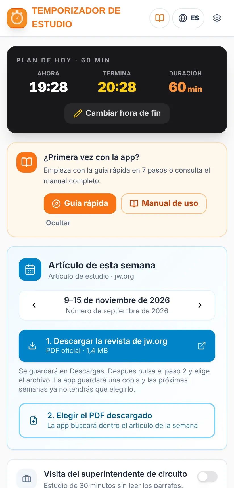
Pantalla de inicio.
Botón del libro: abre este manual en cualquier momento.
“¿Primera vez con la app?”: abre la guía rápida o el manual. Cuando ya conozcas la app, pulsa Ocultar.
“¿Usas Android?” (solo en móviles Android que usan el navegador): instala la app desde Google Play. También se puede ocultar.
Más abajo encontrarás:
Plan de hoy: la hora actual, la hora a la que termina el estudio y su duración.
Artículo de esta semana: para descargar la revista y abrirla (apartado 4).
Visita del superintendente de circuito: el interruptor para el estudio de 30 minutos (apartado 13).
Ajustes del estudio: un resumen de tu configuración, con el enlace Cambiar.
Al final, los enlaces a la privacidad, el manual, Google Play y el historial de estudios.
Arriba están también el idioma (ES) y los ajustes⚙.
4Cargar el artículo de la semana
La tarjeta “Artículo de esta semana” muestra la semana actual (por ejemplo, 9–15 de noviembre de 2026) y el número de La Atalaya que la contiene. Con las flechas ‹› puedes elegir otra semana.
“1. Descargar la revista de jw.org” abre el PDF oficial del número que corresponde. En Android se guarda en Descargas; en iPhone, pulsa Compartir → “Guardar en Archivos”.
“2. Elegir el PDF descargado”: selecciona ese archivo. La aplicación busca dentro de la revista el artículo de la semana elegida y lo analiza. Después de pulsar el paso 1, al volver a la app este botón se pone verde (“¿Ya se descargó? Toca aquí para abrirlo”): basta un toque.
La Atalaya se descarga en el idioma de la aplicación. Si la aplicación está en español, se descarga la edición en español; si está en inglés, la edición en inglés, y así con todos los idiomas. Para descargar otro idioma, cambia primero el idioma de la aplicación (apartado 14). En portugués, se descarga la edición de Portugal o la de Brasil, según lo que hayas elegido.
La aplicación guarda una copia de la revista. Las semanas siguientes del mismo número se abren directamente con “Abrir el artículo de esta semana”, sin volver a descargar nada. Las revistas guardadas se borran solas 3 meses después de su última semana.
En el ordenador también puedes arrastrar el PDF a cualquier parte de la pantalla de inicio (aparece el aviso “Suelta aquí el PDF”) o elegir la carpeta donde guardas las revistas, y la aplicación las encontrará sola.
¿Dice que la revista todavía no está publicada? jw.org publica cada número unas semanas antes. Si eliges una semana muy lejana, puede que aún no esté disponible.
5El resumen y el plan del estudio
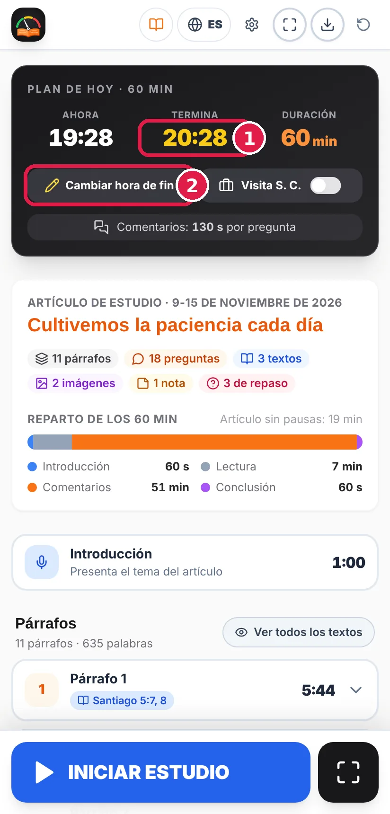
El plan de hoy.
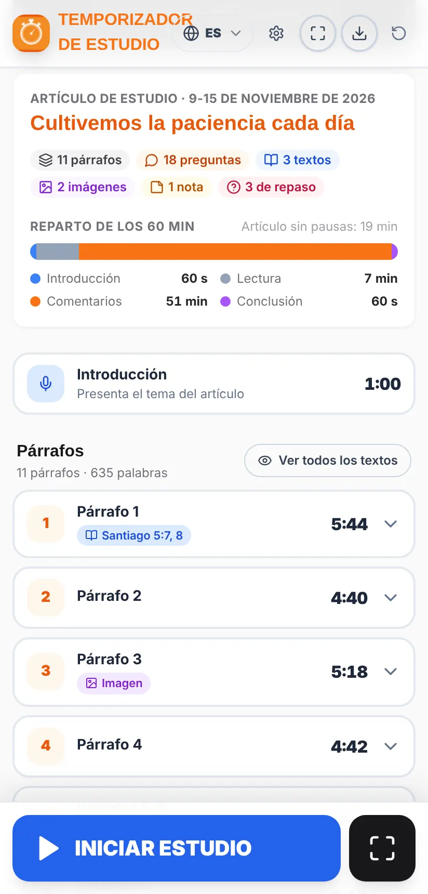
El resumen del artículo.
Hora de fin: la hora a la que termina el estudio.
“Cambiar hora de fin”: si tu reunión termina a otra hora, escríbela aquí. Todo se recalcula para terminar a esa hora.
Debajo, el resumen del artículo muestra:
El título y la semana.
Cuántos párrafos, preguntas, textos, imágenes y notas tiene.
Una barra de colores con el reparto del tiempo: IntroducciónLecturaComentariosConclusión.
En el plan verás también “Comentarios: X s por pregunta”: el tiempo medio para responder cada pregunta.
Si el artículo no cabe en el tiempo elegido, aparece el aviso “No cabe”. Puedes alargar la duración o elegir una lectura más rápida en Ajustes.
6La lista de párrafos
Cada párrafo aparece en una línea con su número y su tiempo previsto. Toca un párrafo para abrirlo.
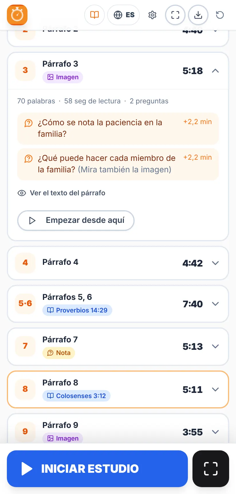
Un párrafo abierto.
Datos del párrafo, cada uno con su color: palabras (gris), tiempo de lectura (azul) y preguntas (naranja). Durante el estudio aparece también la hora prevista (morado).
Tiempo previsto del párrafo: el total y cómo se reparte. La barra muestra la lectura (azul), los comentarios (naranja) y, en los párrafos largos, un extra para más comentarios (verde). Las partes suman el total.
“Empezar desde aquí”: si el estudio ya va empezado (por ejemplo, llegas tarde), salta a este párrafo.
Las etiquetas de colores avisan de lo que hay que tener en cuenta:
Etiqueta
Qué significa
Santiago 5:7, 8
Hay un texto bíblico para leer.
Imagen
La pregunta habla de una imagen del artículo.
Nota
Hay una nota que comentar.
★ Idea importante
La pregunta menciona un recuadro o una idea entre comillas.
Con “Ver el texto del párrafo” puedes leer el texto para preparar los tiempos. Para conducir, usa siempre la publicación original.
Los párrafos que comparten pregunta (por ejemplo, “5, 6”) van juntos, y el botón Siguiente salta el grupo entero.
7Conducir el estudio paso a paso
Recomendado: durante el estudio usa el modo presentación (apartado 9). Aquí se explica cómo funciona; es igual en las dos vistas.
En el móvil, los botones principales están siempre abajo:
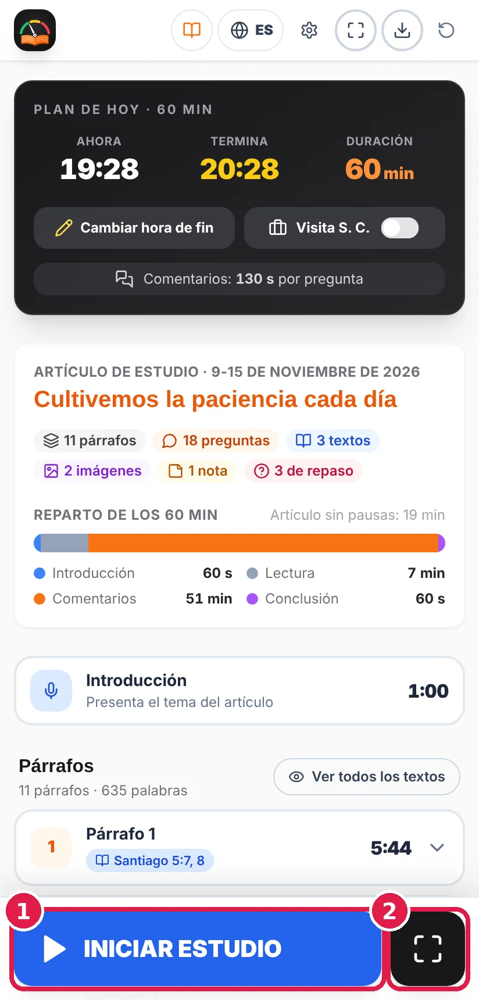
Antes de empezar.
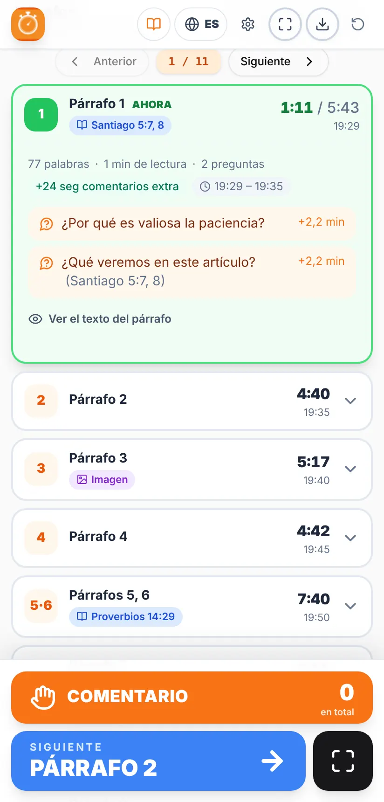
Durante un párrafo.
Botón azul grande: te dice qué viene después. Púlsalo cada vez que pases a otra parte: Iniciar estudio → Párrafo 1 → Párrafo 2 → … → Repaso → Conclusión → Finalizar estudio.
Botón negro⛶: abre el modo presentación.
Durante los párrafos aparece también el botón naranja ✋ COMENTARIO: púlsalo cada vez que alguien comenta. Al final verás cuántos comentarios hubo.
Introducción. Pulsa “Iniciar estudio”. Empiezan el cronómetro general y el de la introducción.
Párrafos. Pulsa Siguiente al empezar cada párrafo. Verás el tiempo que lleva sobre el previsto (por ejemplo, 1:11 / 5:43) y el color (apartado 8).
Preguntas de repaso. Después del último párrafo vienen las preguntas del recuadro final.
Conclusión. Dura justo lo que queda hasta la hora de fin: si sobra tiempo, lo aprovecha todo, aunque sea más que el minuto de Ajustes, y si queda menos, se acorta. Si se pasa la hora de fin, se pone en rojo.
Finalizar estudio. Se detiene el cronómetro y se guarda el informe del estudio (apartado 15).
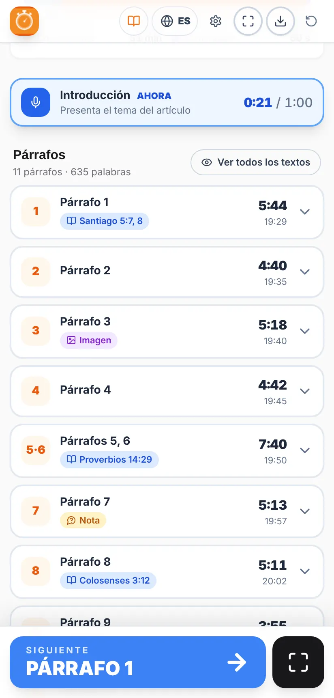
Introducción en curso.
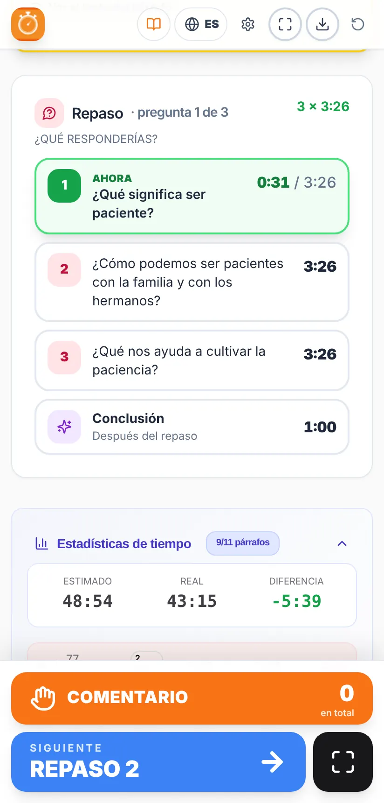
Preguntas de repaso.
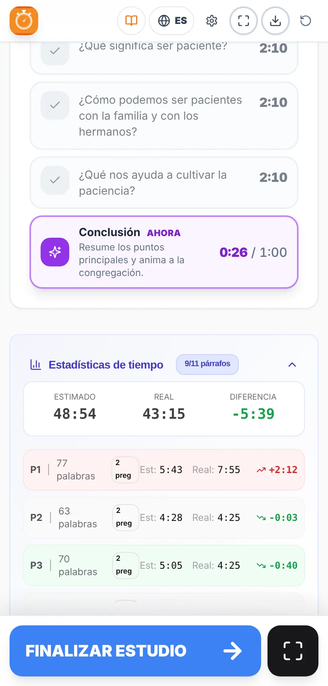
Conclusión.
Con el botón ⏸ del plan puedes pausar el cronómetro si hay una interrupción. En pausa se detiene el reloj de la parte en curso, pero la hora de fin no se mueve: el tiempo restante sigue bajando, porque la reunión termina a su hora.
8Los colores: verde, amarillo y rojo
La tarjeta de lo que está en curso (párrafo, introducción, pregunta de repaso o conclusión) cambia de color según el tiempo que lleva:
Color
Cuándo
Qué hacer
EN TIEMPO
Hasta el tiempo previsto.
Todo bien: sigue así.
PRÓRROGA
Se ha pasado de su tiempo, pero no más de un 30 %.
Ve cerrando los comentarios.
EXCEDIDO
Más de un 30 % por encima de lo previsto.
Pasa al siguiente párrafo.
En tiempo.
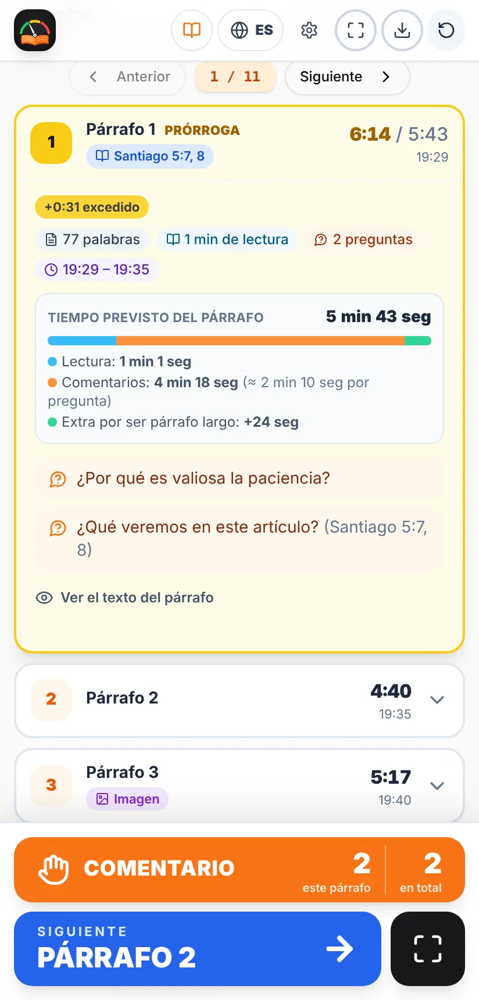
Prórroga, con el tiempo que se ha excedido.
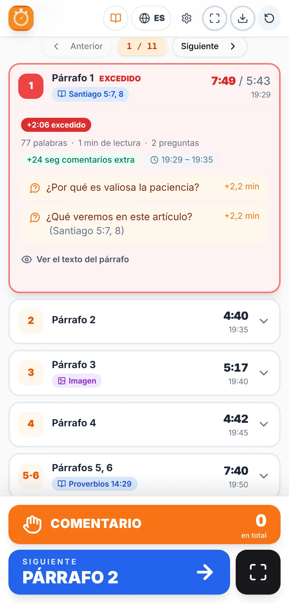
Excedido.
En los últimos 5 minutos del estudio los párrafos y las preguntas de repaso no tienen prórroga: pasan directamente de verde a rojo, para no comerse el tiempo del final. La conclusión conserva siempre su prórroga.
Si un tramo se alarga, no pasa nada: al pulsar Siguiente, la aplicación vuelve a repartir el tiempo que queda entre lo que falta, para terminar a la hora.
El botón «Siguiente» también te avisa
Cuando el tramo en curso pasa a rojo, el botón grande para avanzar también cambia, para que lo veas sin buscarlo:
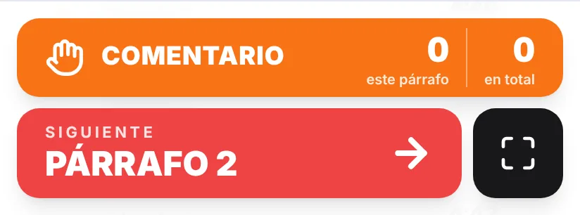
En rojo: aún se puede recuperar.
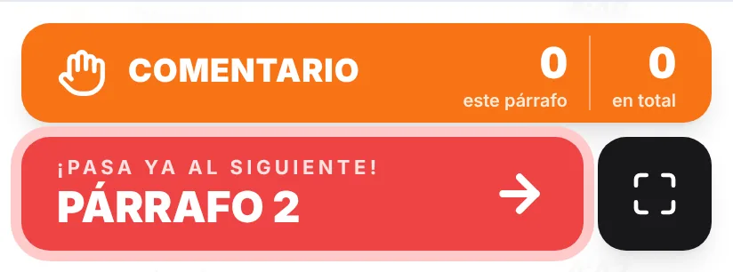
Parpadeando: pasa ya al siguiente.
Botón rojo: el tramo se ha pasado de tiempo, pero todavía se puede recuperar en lo que falta. Ve cerrando los comentarios.
Botón rojo que parpadea con «¡Pasa ya al siguiente!»: ya no queda de dónde sacar tiempo (quedarían menos de 30 segundos por cada pregunta que falta, o estás en los últimos 5 minutos). Pasa al siguiente en cuanto puedas.
En el modo presentación el botón se vuelve blanco con letras rojas, para que se vea bien sobre cualquier color de fondo.
Si no lo quieres, apágalo en Ajustes → Avisos → «Botón «Siguiente» en rojo».
9El modo presentación
Es la forma recomendada de conducir el estudio. Muestra solo lo necesario, con letras y botones grandes, y el color te dice de un vistazo cómo vas de tiempo.
Se abre con el botón ⛶ de abajo y se cierra con la ✕ de arriba (o con el botón “atrás” del móvil, sin salir de la app).
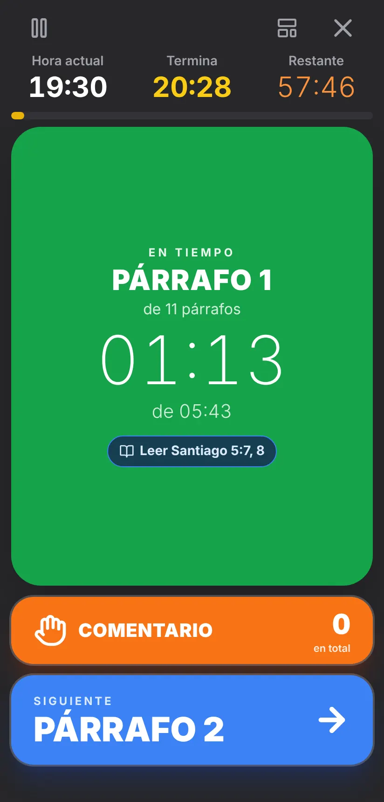
El modo presentación durante un párrafo.
Recuadro de color: dónde estás (por ejemplo, Párrafo 1), el cronómetro de esa parte y su tiempo previsto. Verde, amarillo o rojo según vas.
Comentario: púlsalo cada vez que alguien comenta. A la izquierda ves los comentarios de este párrafo (o de esta pregunta) y a la derecha los del total.
Siguiente: pasa a la parte siguiente. El botón dice qué viene después.
Arriba ves a qué hora empezó el estudio, la hora actual, la hora a la que termina y el tiempo que queda.
Hay tres diseños. Se cambian con el botón ▦ de arriba o en Ajustes → Pantalla:
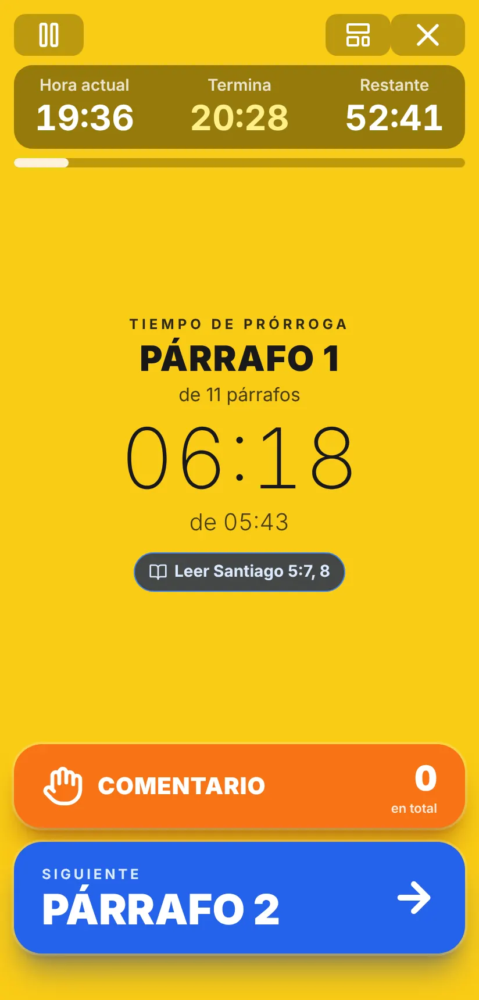
Semáforo: toda la pantalla cambia de color.
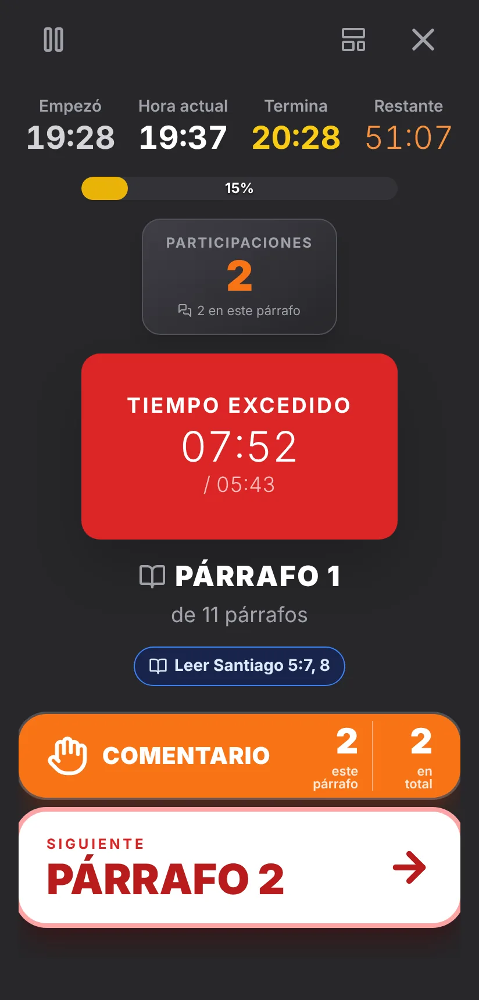
Clásico: con el contador de comentarios.
Al final, el botón grande dice “Finalizar estudio” y, después, “Ver informe”.
10Cómo se calculan los tiempos
Lectura de cada párrafo = sus palabras ÷ la velocidad de lectura (150, 180 o 210 palabras por minuto), más el tiempo por respuesta (mínimo 30 segundos; por defecto 35) por cada texto bíblico, imagen, nota o idea importante.
Introducción y conclusión tienen reservado el tiempo de Ajustes (1 minuto cada una por defecto). La conclusión se ajusta a la hora de fin: si al terminar el repaso sobra tiempo, se queda con todo; si falta, se acorta.
Comentarios: el resto del tiempo se reparte entre todas las preguntas. Los párrafos largos o agrupados reciben un poco más (el “extra” verde del apartado 6).
Durante el estudio: cada vez que pulsas Siguiente, se recalcula lo que queda para terminar a la hora.
Ejemplo: en un estudio de 60 minutos con 11 párrafos y 21 preguntas, unos 7 minutos son de lectura, 2 de introducción y conclusión, y unos 51 de comentarios: algo más de 2 minutos por pregunta.
11Ajustes
Toca ⚙ arriba a la derecha. Los ajustes se guardan en tu dispositivo y están organizados en cuatro pestañas:
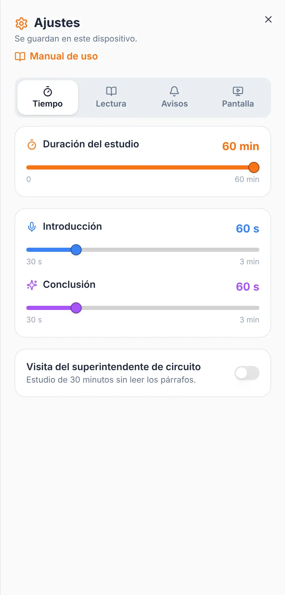
Tiempo
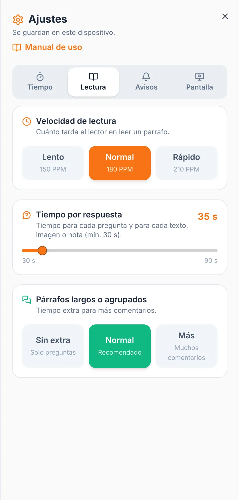
Lectura
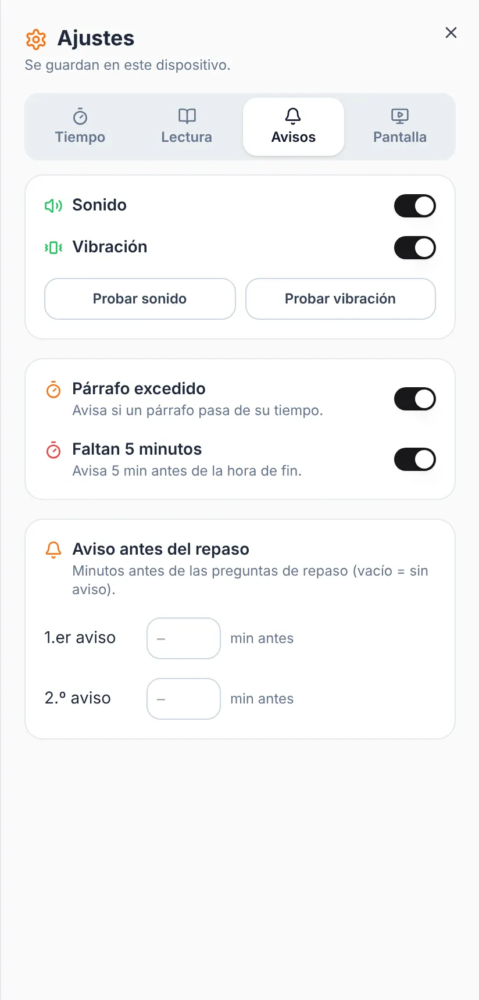
Avisos
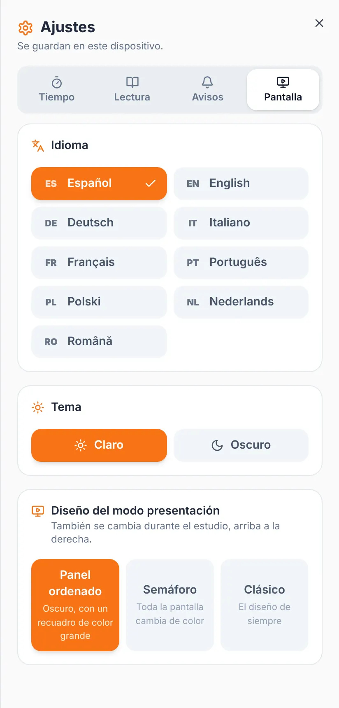
Pantalla
Pestaña
Qué puedes cambiar
Tiempo
Duración del estudio (hasta 60 min). Duración de la introducción y de la conclusión (de 30 s a 3 min). Visita del superintendente de circuito.
Lectura
Velocidad de lectura del lector: Lento (150), Normal (180) o Rápido (210 palabras/min). Tiempo por respuesta (de 30 a 90 s; también se usa para cada texto, imagen, nota o idea importante). Párrafos largos o agrupados: Sin extra, Normal o Más comentarios.
Avisos
Sonido y vibración (con botones para probarlos). Aviso de párrafo excedido, aviso de “faltan 5 minutos” y hasta dos avisos antes del repaso.
Pantalla
Idioma, tema claro u oscuro (con cuatro variantes de oscuro) y el diseño del modo presentación.
Si cambias la velocidad de lectura o el tiempo por respuesta con el estudio en marcha, se aplicará en el próximo estudio.
12Avisos de sonido y vibración
Párrafo excedido: suena cuando el párrafo en curso se pasa de su tiempo.
Faltan 5 minutos: 5 minutos antes de la hora de fin, con sonido, vibración y un mensaje en pantalla.
Antes del repaso: escribe cuántos minutos antes de las preguntas de repaso quieres un aviso (por ejemplo, 10 y 5). Déjalo vacío si no lo quieres.
Poco tiempo para el repaso: si quedan menos de 20 segundos por pregunta de repaso, la aplicación te lo advierte.
Botón «Siguiente» en rojo: el botón para avanzar se pone rojo cuando el tramo se pasa de tiempo y parpadea cuando ya no queda de dónde recuperarlo (apartado 8).
Comprueba que el móvil no está en silencio si quieres oír los avisos. La vibración funciona en Android; en iPhone depende del navegador.
13Visita del superintendente de circuito
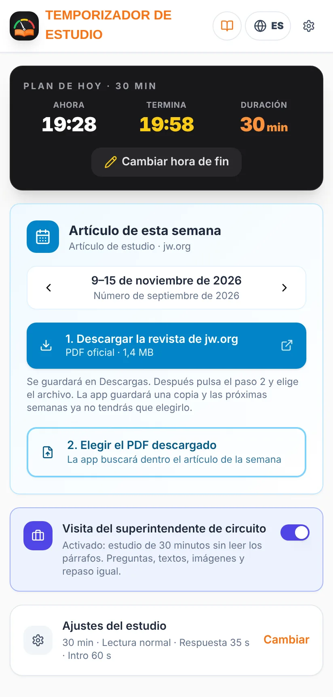
Interruptor activado: estudio de 30 minutos.
La semana de la visita, activa el interruptor “Visita del superintendente de circuito” en la pantalla de inicio (o en Ajustes → Tiempo). El estudio pasa a durar 30 minutos y no se leen los párrafos: se mantienen las preguntas, los textos bíblicos, las imágenes y el repaso. Recuerda desactivarlo después de la visita.
14Idiomas
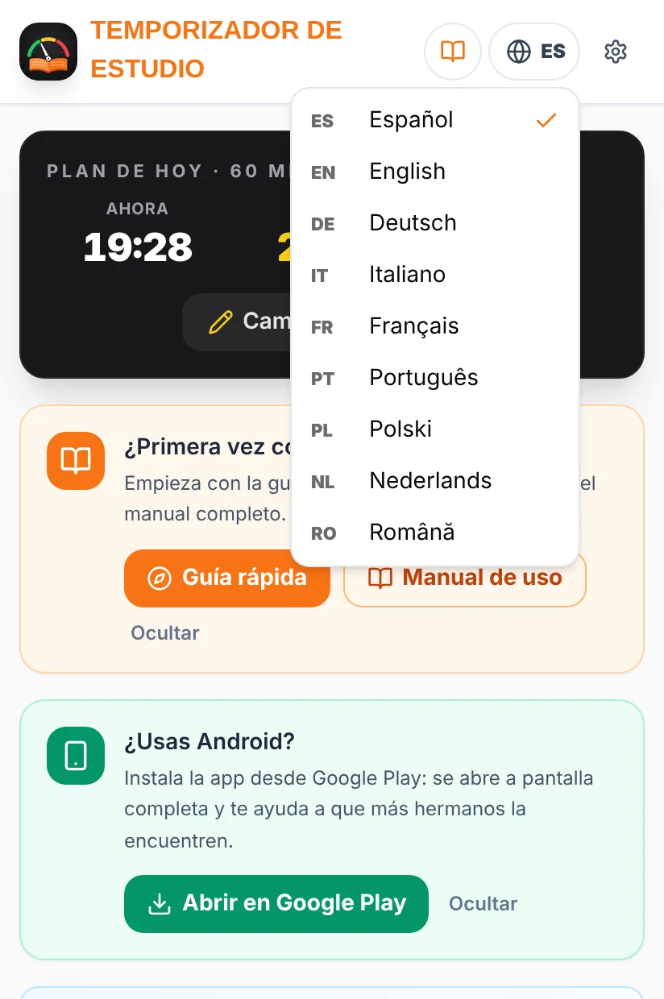
Menú de idioma.
La aplicación funciona en español, inglés, alemán, italiano, francés, portugués, polaco, neerlandés y rumano. Cámbialo con el botón del globo, arriba, o en Ajustes → Pantalla. Al cambiar el idioma:
Toda la aplicación aparece en ese idioma, con sus fechas y horas.
El botón de jw.org descarga La Atalaya en ese mismo idioma. El idioma de la aplicación decide el idioma de la revista.
En portugués, la aplicación pregunta una vez si prefieres la edición de Portugal o la de Brasil. Puedes cambiarlo después en Ajustes → Pantalla.
Este manual también está disponible en todos esos idiomas: usa los botones de idioma de la parte de arriba.
15Al terminar: el informe y el historial
Al pulsar “Finalizar estudio”, la aplicación guarda un informe con los tiempos de cada parte. Te sirve para ver qué se alargó y mejorar la próxima vez.
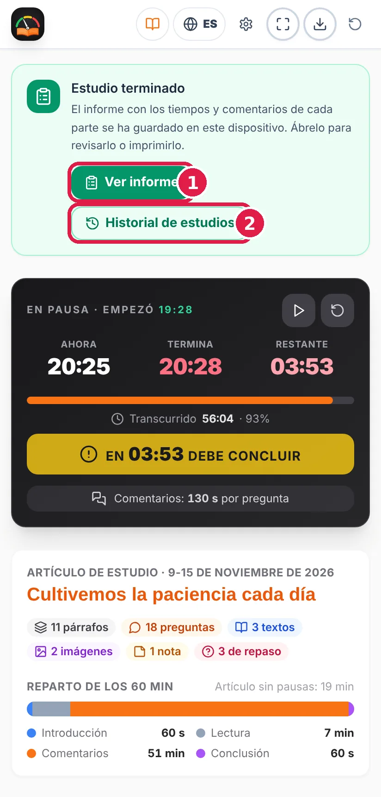
Arriba aparece la tarjeta “Estudio terminado”.
Ver informe: abre el informe de este estudio en una pestaña aparte.
Historial de estudios: abre la lista de todos los estudios guardados.
El informe
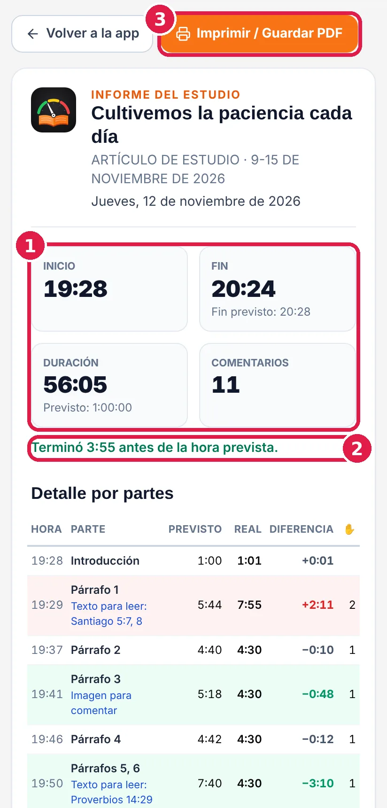
Parte de arriba del informe.
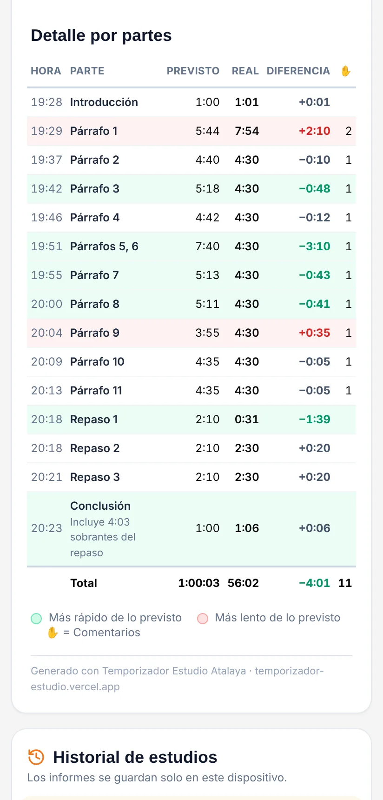
La tabla con cada parte.
Inicio, fin y duración del estudio, con la hora de fin prevista y el total de comentarios.
Resumen en una frase, por ejemplo “Terminó 3:57 antes de la hora prevista” (en verde) o “después” (en rojo).
Imprimir / Guardar PDF: para imprimirlo en papel o guardarlo como archivo.
La tabla tiene una fila por cada parte: introducción, cada párrafo, cada pregunta de repaso y conclusión. En cada fila verás:
Hora a la que empezó esa parte.
Previsto y Real: el tiempo del plan y el que de verdad se usó.
Diferencia: en verde si fue más rápido y en rojo si se alargó.
✋: los comentarios marcados.
En el ordenador y al imprimir aparecen también las palabras y las preguntas de cada párrafo. El informe impreso cabe en una hoja.
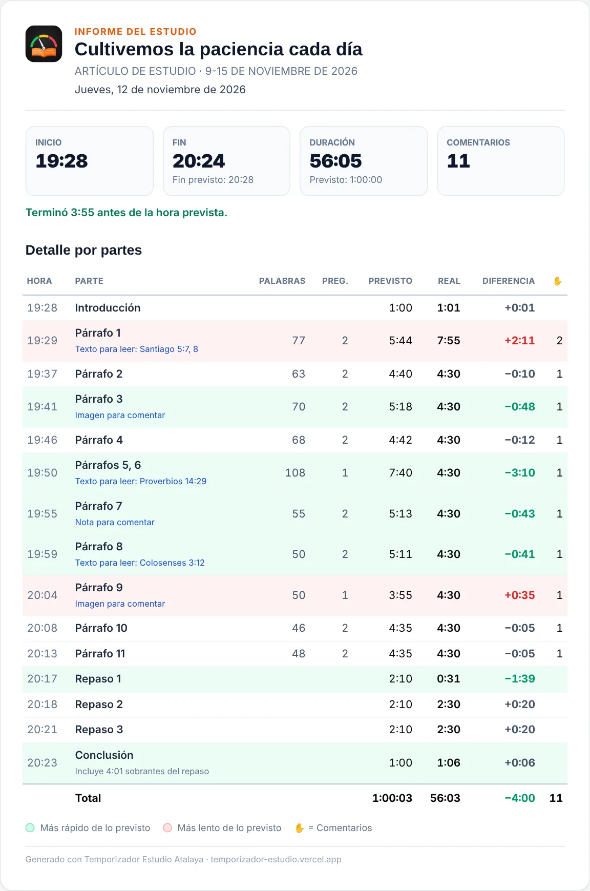
El informe completo, como se ve en el ordenador o impreso.
El historial de estudios
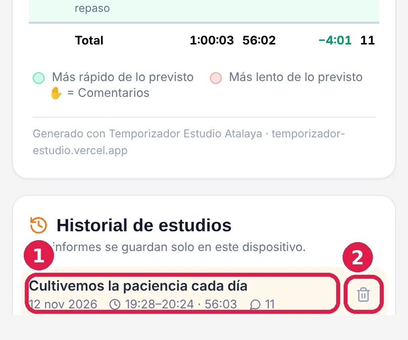
Lista de estudios guardados, debajo del informe.
Toca un estudio para ver su informe. Se muestran la fecha, las horas, la duración y los comentarios.
Papelera: para borrar un informe. Pulsa una vez y después confirma con “¿Eliminar?”.
Los informes se guardan solo en este dispositivo, nunca en internet. Se guardan hasta 100 estudios. Si borras los datos del navegador o de la app, el historial se pierde.
También puedes abrir el historial desde el enlace “Historial de estudios” al final de la pantalla de inicio.
Otras opciones
Debajo del plan aparecen también las estadísticas de tiempo de cada párrafo.
Con el botón exportar⬇ de arriba puedes guardar el plan del estudio como imagen o PDF.
Para preparar otro estudio, pulsa empezar de nuevo↻.
16Preguntas frecuentes
¿Puedo conducir leyendo los párrafos y las preguntas en la aplicación?
No. La aplicación los muestra solo para calcular los tiempos. Para conducir, usa siempre JW Library o la revista La Atalaya impresa.
¿Por qué se descargó La Atalaya en otro idioma?
La revista se descarga en el idioma de la aplicación. Cambia el idioma con el botón del globo y vuelve a pulsar “Descargar la revista de jw.org”.
Dice que no reconoce el formato del artículo.
Usa el PDF oficial de La Atalaya, edición de estudio, descargado de jw.org (el botón “Descargar la revista de jw.org” lo hace por ti). Los PDF escaneados o hechos con capturas no se pueden leer.
No encuentra el artículo de la semana dentro de la revista.
Comprueba que la semana elegida corresponde a ese número de la revista. Si no, la aplicación muestra el artículo más cercano y te deja elegir otra semana.
¿Necesito internet durante el estudio?
Solo para descargar la revista. Una vez cargado el artículo, el temporizador funciona sin conexión.
Llegué tarde o empecé con retraso, ¿qué hago?
Abre el párrafo por el que vais y pulsa “Empezar desde aquí”. La aplicación repartirá el tiempo que queda.
Quiero terminar a una hora exacta.
Usa “Cambiar hora de fin” en el plan de hoy y escribe la hora. Todo se calcula para terminar a esa hora.
No suenan los avisos.
Revisa en Ajustes → Avisos que estén activados, pulsa “Probar sonido” y comprueba que el móvil no esté en silencio.
¿Qué datos guarda la aplicación?
Solo tus ajustes y las revistas que eliges guardar, y siempre en tu dispositivo. No hay cuentas ni se envían datos a ningún servidor. Más información en la política de privacidad.
¿Dónde veo los estudios de otras semanas?
En el historial de estudios: pulsa “Historial de estudios” al terminar un estudio o en el enlace del final de la pantalla de inicio.
¿Puedo borrar un informe?
Sí. En el historial, pulsa la papelera del estudio y después confirma con “¿Eliminar?”.
¿Por qué la conclusión duró más de lo previsto?
Si al terminar el repaso sobra tiempo, la conclusión se queda con ese tiempo para terminar a la hora. El informe lo indica debajo de “Conclusión”.